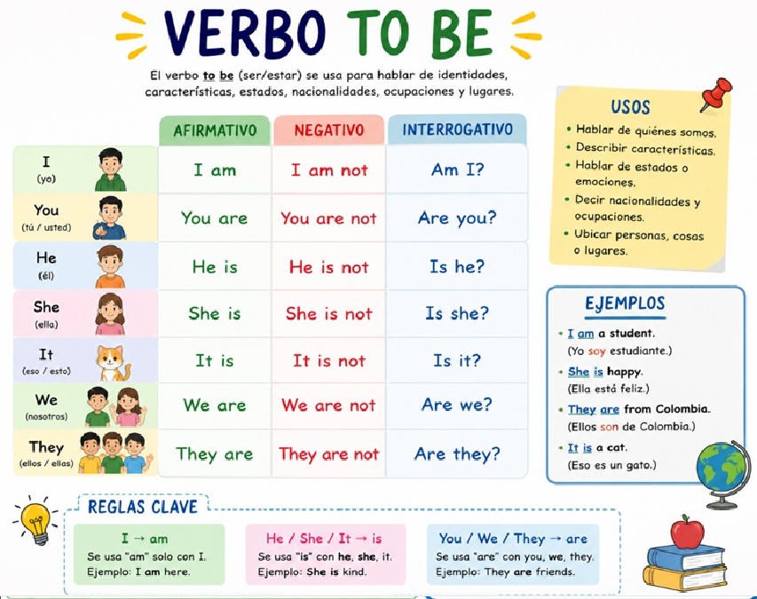

【Breve descripción de lo que aprenderás en esta unidad】
Hello! Do you know the most important verb in English? Do you want to say "I am happy", "She is a teacher", or "We are from Colombia"? To do this, you need to learn the verb TO BE. This verb means both "ser" and "estar" in Spanish, and it is used in almost every conversation. Without it, it is very difficult to speak English correctly.
En esta unidad, vamos a estudiar a fondo el verbo más importante del inglés: el verbo TO BE (ser o estar). Aprenderemos su conjugación en presente, cómo usarlo en oraciones afirmativas, negativas y preguntas, y practicaremos con muchos ejemplos. ¡Al final de esta unidad podrás presentarte, describir personas y lugares, hablar de tus sentimientos y mucho más!
El verbo TO BE es el único verbo en inglés que cambia su forma dependiendo del sujeto (I am, you are, he/she/it is). ¡Esto lo hace especial y muy importante de aprender!
Comprender y utilizar correctamente el verbo TO BE (ser/estar) en presente simple en sus formas afirmativa, negativa e interrogativa, para comunicarse en situaciones básicas de la vida cotidiana.
El verbo TO BE es el verbo más importante del inglés. Tiene dos significados principales en español:
| TO BE | Significado | Example |
|---|---|---|
| TO BE | SER (permanente / identidad) | I am a student. (Yo soy estudiante) |
| ESTAR (temporal / ubicación / emoción) | She is at home. (Ella está en casa) |

El verbo TO BE se conjuga de forma diferente a los demás verbos en inglés. Esta es su conjugación completa:
| Subject (Sujeto) | Verb TO BE | Contraction (Contracción) | Example (Ejemplo) |
|---|---|---|---|
| I (Yo) | am | I'm | I am happy. / I'm happy. (Estoy feliz) |
| You (Tú / Usted) | are | You're | You are my friend. / You're my friend. (Eres mi amigo) |
| He (Él) | is | He's | He is tall. / He's tall. (Él es alto) |
| She (Ella) | is | She's | She is a teacher. / She's a teacher. (Ella es profesora) |
| It (Eso / Él/Ella - para cosas y animales) | is | It's | It is a book. / It's a book. (Es un libro) |
| We (Nosotros) | are | We're | We are students. / We're students. (Somos estudiantes) |
| They (Ellos / Ellas) | are | They're | They are from Mexico. / They're from Mexico. (Ellos son de México) |
AM solo se usa con I (I am).
IS se usa con He / She / It (tercera persona singular).
ARE se usa con You / We / They.
La estructura de una oración afirmativa con el verbo TO BE es muy sencilla:
| Structure | Example | Traducción |
|---|---|---|
| Subject + TO BE + complement | I am a student. | Yo soy estudiante. |
| She is intelligent. | Ella es inteligente. | |
| We are in the classroom. | Nosotros estamos en el salón. | |
| They are happy. | Ellos están felices. |
Usamos el verbo TO BE para:
| Use (Uso) | Example | Traducción |
|---|---|---|
| Name (Nombre) | My name is Ana. | Mi nombre es Ana. |
| Nationality (Nacionalidad) | I am Colombian. | Yo soy colombiano. |
| Profession (Profesión) | He is a doctor. | Él es doctor. |
| Age (Edad) | She is 12 years old. | Ella tiene 12 años. |
| Feeling / Emotion (Sentimiento / Emoción) | We are tired. | Nosotros estamos cansados. |
| Location (Ubicación) | The book is on the table. | El libro está en la mesa. |
| Description (Descripción) | It is big and beautiful. | Es grande y hermoso. |
📝 More examples / Más ejemplos:
✅ I am from Colombia. (Soy de Colombia)
✅ You are my best friend. (Eres mi mejor amigo)
✅ He is very tall. (Él es muy alto)
✅ She is a nurse. (Ella es enfermera)
✅ It is a sunny day. (Es un día soleado)
✅ We are in English class. (Estamos en clase de inglés)
✅ They are at the park. (Ellos están en el parque)
Para hacer una oración negativa, simplemente agregamos la palabra NOT después del verbo TO BE:
| Structure | Full Form | Contraction | Traducción |
|---|---|---|---|
| Subject + TO BE + NOT + complement | I am not a teacher. | I'm not a teacher. | Yo no soy profesor. |
| You are not late. | You aren't late. | Tú no llegas tarde. | |
| He is not from Brazil. | He isn't from Brazil. | Él no es de Brasil. | |
| She is not sad. | She isn't sad. | Ella no está triste. | |
| It is not cold. | It isn't cold. | No hace frío. | |
| We are not tired. | We aren't tired. | Nosotros no estamos cansados. | |
| They are not at home. | They aren't at home. | Ellos no están en casa. |
is + not = isn't (He isn't, She isn't, It isn't)
are + not = aren't (You aren't, We aren't, They aren't)
am + not = am not (No existe contracción; se dice "I'm not")
📝 More negative examples:
❌ I am not (I'm not) a doctor. → No soy doctor.
❌ You are not (aren't) late. → No llegas tarde.
❌ He is not (isn't) angry. → Él no está enojado.
❌ She is not (isn't) my sister. → Ella no es mi hermana.
❌ It is not (isn't) expensive. → No es caro.
❌ We are not (aren't) ready. → No estamos listos.
❌ They are not (aren't) here. → Ellos no están aquí.
Para hacer preguntas con el verbo TO BE, simplemente invertimos el orden: el verbo TO BE va antes del sujeto:
| Structure | Question | Short answer (Yes) | Short answer (No) |
|---|---|---|---|
| TO BE + Subject + complement? | Am I late? | Yes, you are. | No, you aren't. |
| Are you a student? | Yes, I am. | No, I'm not. | |
| Is he your brother? | Yes, he is. | No, he isn't. | |
| Is she happy? | Yes, she is. | No, she isn't. | |
| Is it your book? | Yes, it is. | No, it isn't. | |
| Are we in the right room? | Yes, we are. | No, we aren't. | |
| Are they from Spain? | Yes, they are. | No, they aren't. |
En inglés, no respondemos solo "Yes" o "No" — siempre repetimos el pronombre y el verbo TO BE:
Are you Colombian? → ✅ Yes, I am. / ❌ No, I'm not.
Is she your friend? → ✅ Yes, she is. / ❌ No, she isn't.
Además de las preguntas de Yes/No, podemos usar palabras como What, Where, Who, How, When, Why:
| Wh- word | Question | Answer | Traducción |
|---|---|---|---|
| What (Qué) | What is your name? | My name is Carlos. | ¿Cuál es tu nombre? |
| Where (Dónde) | Where is the school? | It is on Main Street. | ¿Dónde está la escuela? |
| Who (Quién) | Who is she? | She is my mother. | ¿Quién es ella? |
| How (Cómo) | How are you? | I am fine, thanks. | ¿Cómo estás? |
| How old (Cuántos años) | How old is your brother? | He is 10 years old. | ¿Cuántos años tiene tu hermano? |
| When (Cuándo) | When is the party? | It is on Saturday. | ¿Cuándo es la fiesta? |
| Why (Por qué) | Why are you sad? | Because I am tired. | ¿Por qué estás triste? |
📝 Complete dialogue / Diálogo completo:
Maria: Hello! My name is Maria. Are you a new student?
Tom: Yes, I am! I am Tom. Nice to meet you!
Maria: Nice to meet you too. Where are you from?
Tom: I am from the United States. And you?
Maria: I am from Colombia. Is this your first day?
Tom: Yes, it is. I am a little nervous.
Maria: Don't worry! You are in the right class. We are all friendly here.
Tom: Thank you! You are very kind.
Maria: You are welcome! See you later!
Aquí tienes un resumen completo del verbo TO BE en todas sus formas:
| Subject | Affirmative | Negative (full) | Negative (contracted) | Question |
|---|---|---|---|---|
| I | I am | I am not | I'm not | Am I? |
| You | You are | You are not | You aren't | Are you? |
| He | He is | He is not | He isn't | Is he? |
| She | She is | She is not | She isn't | Is she? |
| It | It is | It is not | It isn't | Is it? |
| We | We are | We are not | We aren't | Are we? |
| They | They are | They are not | They aren't | Are they? |
Estas palabras te ayudarán a crear muchas oraciones con el verbo TO BE:
| English | Español |
|---|---|
| Happy | Feliz |
| Sad | Triste |
| Tired | Cansado/a |
| Hungry | Hambriento/a |
| Thirsty | Sediento/a |
| Tall / Short | Alto / Bajo |
| Big / Small | Grande / Pequeño |
| Hot / Cold | Caliente / Frío |
| Young / Old | Joven / Viejo |
| Beautiful / Ugly | Hermoso / Feo |
| Good / Bad | Bueno / Malo |
| Here / There | Aquí / Allí |
| At home | En casa |
| At school | En la escuela |
| A student | Un estudiante |
| A teacher | Un profesor |
| A doctor | Un doctor |
| A friend | Un amigo |
Completa cada oración con la forma correcta del verbo TO BE:
Convierte las siguientes oraciones a negativas:
Convierte las siguientes oraciones en preguntas:
📄 Download the worksheet:
📘 TALLER UNIDAD 1 - VERB TO BE (PDF)Instrucciones (Instructions):